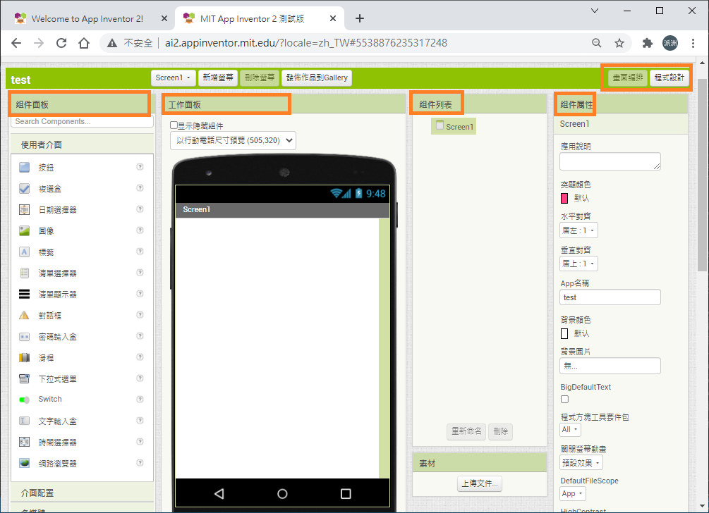
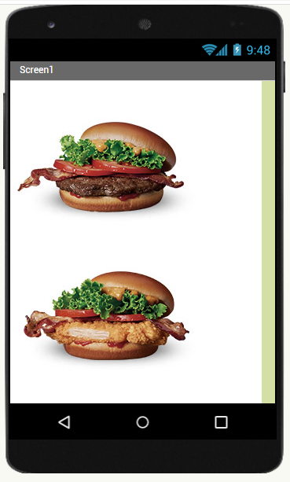
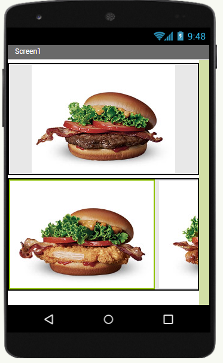
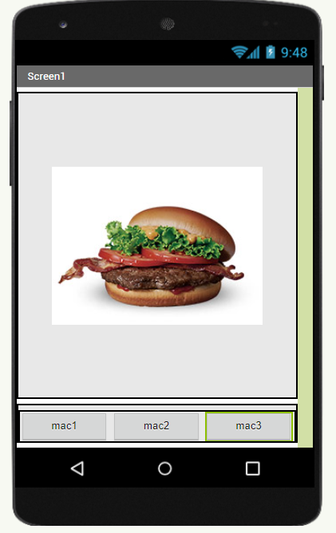
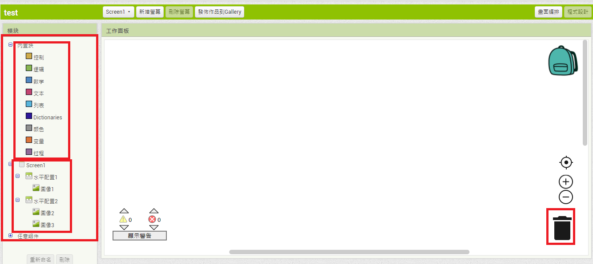
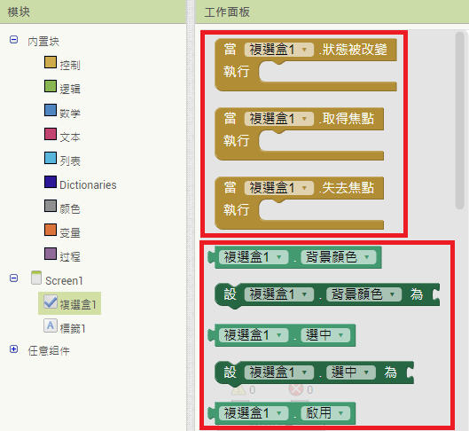
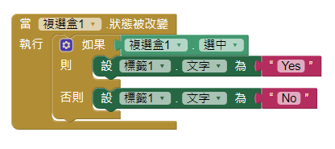

APP Inventor簡介
APP Inventor是一款圖形界面的Android智慧型手機應用程式開發軟體。它一開始由Google提供的應用軟體，現在由麻省理工學院維護及營運。開發者可以使用Google帳號登入並進行開發。
開發介面介紹
請點選 Creat Apps並使用Google 帳號登入，登入後請將顯示語言由英文(English)改為繁體中文，之後請點選 新增專案並輸入英文專案名稱，開啟專案後，我們會看到App Inventor設計介面，介面主要有5個部分包含 組件面板、工作面板、組件列表、組件屬性與畫面/程式設計切換(如下圖)。組件用於設定APP包含組件，工作面板用於顯示現在組件在螢幕呈現樣子，組件列表以樹狀圖方式顯示螢幕組件從屬關係，組件屬性用於設定各個組件屬性包含大小、顏色等等，畫面/程式設計用於切換畫面設計模式或程式設計模式。課程說明前請到Google Play Store下載 MIT AI2 Companion或Apple APP Store下載MIT AI Companion。

組件-使用者介面
用於設定螢幕常用控制項包含按鈕、核取方塊、圖像、標籤、滑桿、開關(Switch)、文字輸入等。
-
按鈕：用於點選，常用屬性包含背景顏色、啟用、字體大小、高度、寬度、圖像、形狀、文字等，按鈕一般會與與程式搭配。
練習：設定一按鈕寬度填滿、背景藍色、字白色、字體大小、按鈕文字為「按鈕1」，並利用AI Companion顯示於手機
- 核取方塊：用於進行勾選，屬性多同於按鈕。
-
圖像：用於顯示圖片，屬性包含高度、寬度、使用圖片及旋轉角度等，使用者必須先上傳文件後才能指定顯示圖片。
練習：請在手機顯示以下任一張圖片：


練習：請顯示圖片按鈕
- 標籤：用於顯示標籤文字，屬性多同於按鈕
- 滑桿：利用滑動改變值，屬性包含寬度、滑桿最大值、滑桿最小值、滑桿起始值等
- 開關：用於進行切換
組件-介面配置
介面配置用於設定手機螢幕版面，預設螢幕配置為由上到下，使用者可以利用介面配置組件改變螢幕組件擺放方式。介面配置組件包含(水平配置、水平捲動配置、表格配置、垂直配置、垂直捲動配置)。請注意手機頁面一定從介面配置開始設計
練習：請建立下列版面(上傳3張圖片並由上而下擺放):

練習：請建立下列版面(上傳3張圖片並由上而下，第一排一張、第二排兩張):

練習：請建立下列版面:

程式設計
當版面設計完畢後，使用者可以切換至程式設計，針對個別組件的動作來設定對應執行程式。程式設計包含左邊 預設程式模組與螢幕組件 及右手邊垃圾桶，使用者對不需要的程式命令可直接拉至垃圾桶刪除。請注意所有組件見程式包含兩個類別(事件與動作)，事件用於設定當組件發生某些狀況時要執行的動作，以核取方塊為例如下圖(土黃色為事件、綠色為動作)


-
預設程式模組包含 控制(條件或迴圈)、邏輯(條件對錯動作)、數學(數字動作)、本文(文字動作)、變量(設定變數)。
練習：請在螢幕放置核取方塊及標籤，當使用者勾選時標籤設定為Yes否則設定為No

練習：設定滑桿最大最小值為100、10，預設值為50，當滑桿值改變時，僵直顯示於標籤